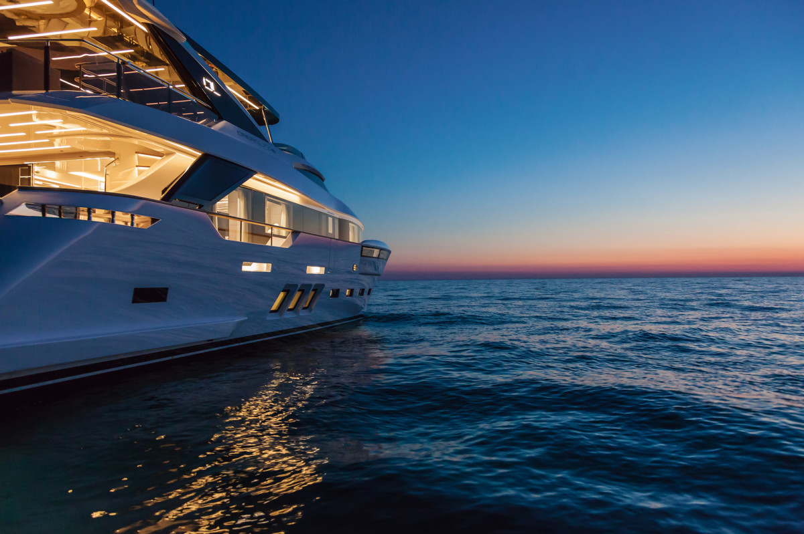

AquaMarine
Categorias
Embarcações
Iates
Jet Skis
Veleiro
Programação
Serviços
Login

Iates
Iate é uma embarcação a vela ou a motor utilizada basicamente para lazer no mar, rios ou lagos. Atualmente existem desde barcos com confortos dignos de mansões, com luxo e sofisticação, aposentos divididos, cozinha, sanitários, ar-condicionado, até pequenas embarcações de lazer
jet Ski
O jet ski é uma máquina com motor movido a combustível que tem a capacidade de carregar uma ou duas pessoas sobre a água. É por isso que ele também é conhecido como motocicleta aquática,
Veleiros
Um veleiro é uma embarcação propelida por um velame, conjunto de velas de tecido de corte e cálculo apropriado, apoiado em um ou mais mastros e controlados por um conjunto de cabos chamado cordoalha, todo esse sistema costuma denominar-se armadoria.